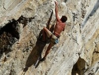
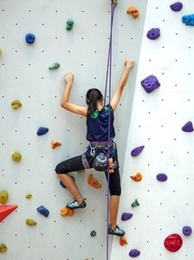
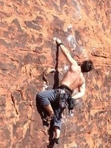

Let's talk about the state of rock climbing
Free Solo Climbing

There's a reason I wanted to begin this conversation with the act of free soloing.
DO NOT ATTEMPT IT
A lot of people got into rock climbing after the release of the Free Solo documentary about Alex Honnold.
His feat was amazing. But his act should never be attemped. Even in the climbing community, his style is reserved for
the best of the best who simply lack a survival instinct. This should not discourage you from rock climbing however.
So let's talk about it some more.
{kind=link}
Indoor Climbing

There's never been a better time to get into rock climbing. And there's no shortage of indoor rock climbing gyms that
are opening up around the country. Statistically, and to the surprise of many, indoor rock climbing is one of the
safest sports out there, though the same can't be said for bouldering. Start off with grade 5.6/7 and slowly work your way
up to 5.10-11. Once your consistantly doing those with some ease, move onto the outdoor stuff.
A note on Elev8 in Traverse City. It's a great gym with a fun group based out of it. But it is designed by
competitive climbers, for competitive climbers. Whatever the difficulty of the problems you try there are,
add two grades to it.
{kind=link}
Outdoor Climbing

Outdoor Climbing should be approached with reverance and caution. Remember, unlike indoor climbing where deaths rare,
and injury typically the result of user behavior. The same can not be said of outdoor climbing, and to quote a friend.
"It's the easy ones where things happen." And I personally attribute this to peopple getting overconfident
and trying something that they shouldn't have.
If you choose to attempt outdoor climbing, I won't stop you. However, I'd advise you to wait until you're ready.
And are confident enough that you won't make any major mistakes.
{kind=link}